Previous experimentWhere does LeFFA generate this detail?
stoppedFrozen original LeFFA · RTX 5090 · no DINO appearance loss · no training updates.
reference_names · 328 · 328 · train_14652_00
328 · 328 · train_14652_00 · ready
heldout · 256 · 256 · test_05010_00
Supervisor stop requested
Real GPU smoke check: 10 case/timestep probes, maximum forward difference with tracing 0.0, peak allocated GPU memory 4.11 GiB. These checks verify the mechanism, not localization accuracy.
Source detail masks come from agreement between two frozen SAM3 prompts. Qwen only names the garment. Orange marks are computed from the generator’s own Q/K attention. Red maps show where intervening on those source values actually changed this same single-pass prediction. No target annotation moves the predicted mark.
The finest native grid has 8-pixel cells; earlier layers have 16-pixel cells and are interpolated for display. Source/target annotations are automatic and can be wrong; a heatmap alone is not proof. Normalized display brightness does not imply confidence. Missing detections are uncertain, not proof of absence.
Displayed cases: all eight known failures, the first eight preregistered fresh test cases, and four development cases. The selection is fixed before scores.
test_00713_00 · regression
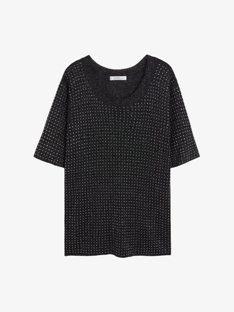
Flatlay reference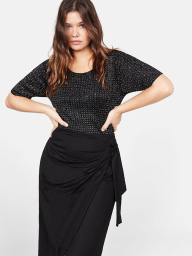
Real worn imageOld garment maskCorrected garment identityProtected body / other garmentsNew inpainting maskProtected pixels erased by inpainting: old 14,931; new 0.
Source detail (automatic annotation)Raw single-pass predictionGenerator attention — orangeMeasured output change — red Frozen model: old versus corrected mask at timestep 499
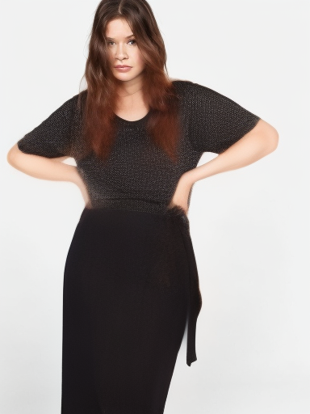
Old mask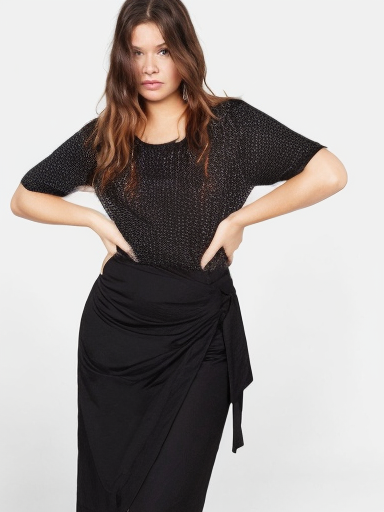
Corrected mask · same checkpoint and noisetest_13036_00 · regression
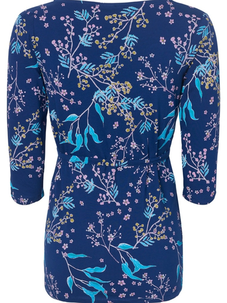
Flatlay reference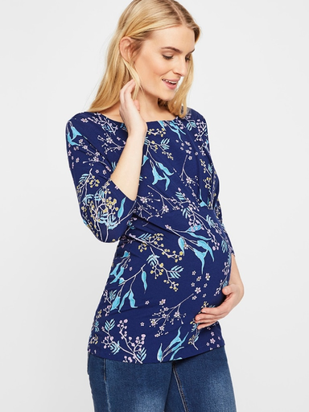
Real worn image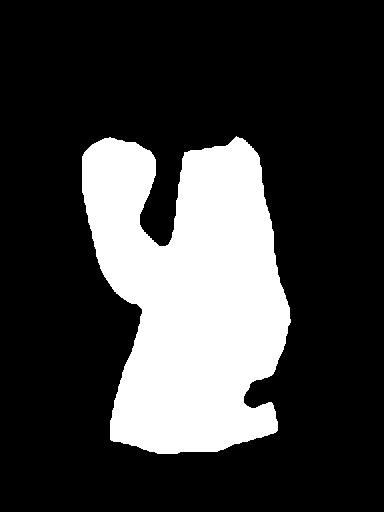
Old garment maskCorrected garment identityProtected body / other garmentsNew inpainting maskProtected pixels erased by inpainting: old 5,039; new 0.
Source detail (automatic annotation)Raw single-pass predictionGenerator attention — orangeMeasured output change — red Frozen model: old versus corrected mask at timestep 499
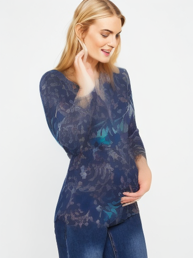
Old mask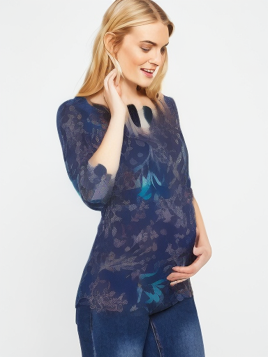
Corrected mask · same checkpoint and noisetest_11215_00 · regression
 Flatlay referenceReal worn imageOld garment mask
Flatlay referenceReal worn imageOld garment mask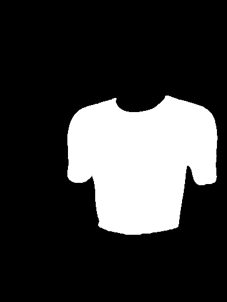
Corrected garment identity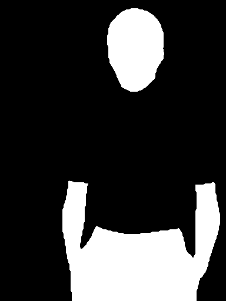
Protected body / other garments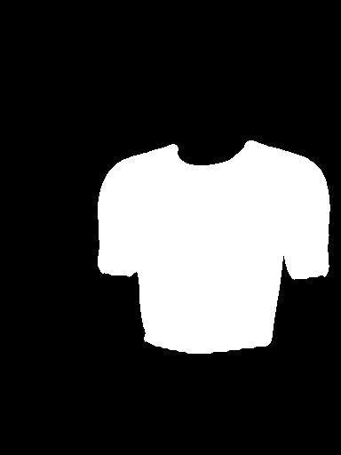
New inpainting maskProtected pixels erased by inpainting: old 9,348; new 0.
Source detail (automatic annotation)Raw single-pass predictionGenerator attention — orangeMeasured output change — red Frozen model: old versus corrected mask at timestep 499
Old mask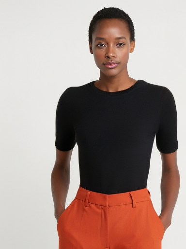
Corrected mask · same checkpoint and noise test_02023_00 · regression
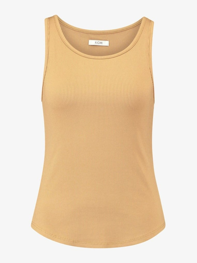
Flatlay reference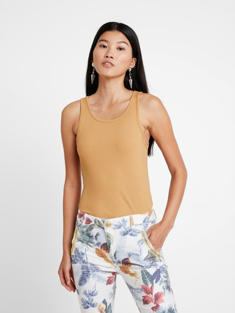
Real worn imageOld garment mask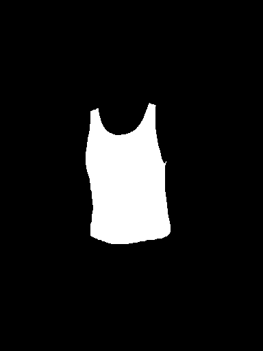
Corrected garment identity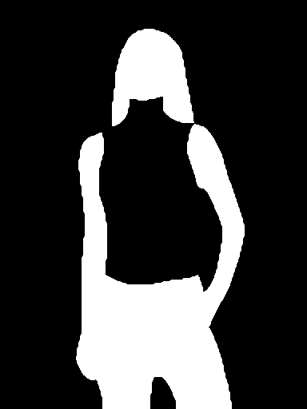
Protected body / other garments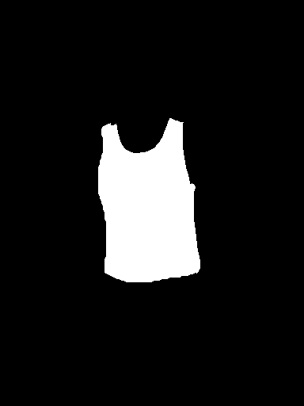
New inpainting maskProtected pixels erased by inpainting: old 14,681; new 0.
Source detail (automatic annotation)Raw single-pass predictionGenerator attention — orangeMeasured output change — red Frozen model: old versus corrected mask at timestep 499
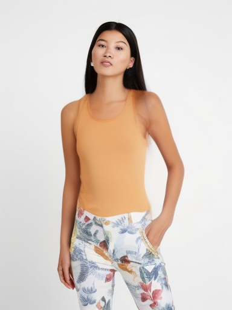
Old mask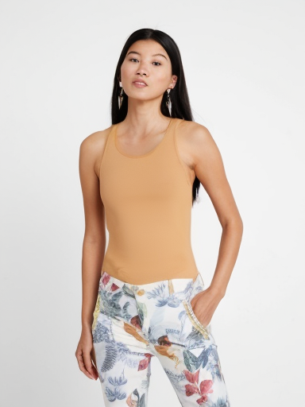
Corrected mask · same checkpoint and noisetest_02911_00 · regression
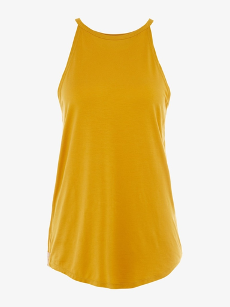
Flatlay reference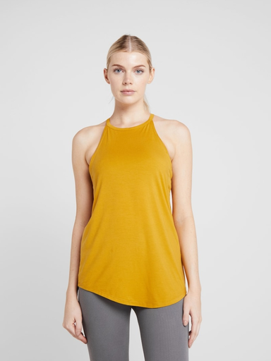
Real worn image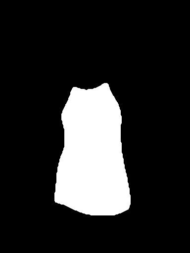
Old garment maskCorrected garment identity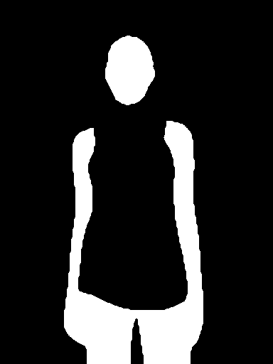
Protected body / other garments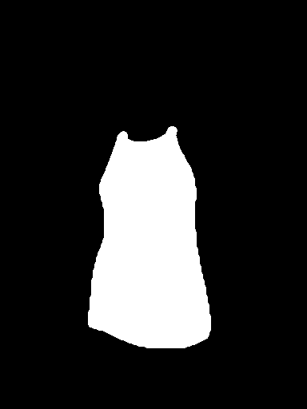
New inpainting maskProtected pixels erased by inpainting: old 12,528; new 0.
Source detail (automatic annotation)Raw single-pass predictionGenerator attention — orangeMeasured output change — red Frozen model: old versus corrected mask at timestep 499
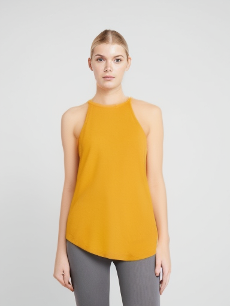
Old mask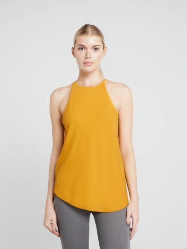
Corrected mask · same checkpoint and noisetest_04972_00 · regression
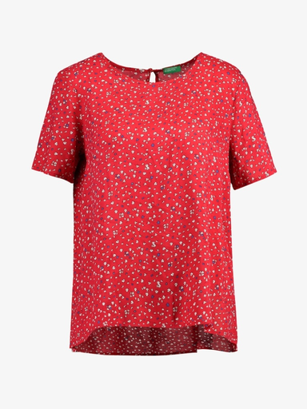
Flatlay reference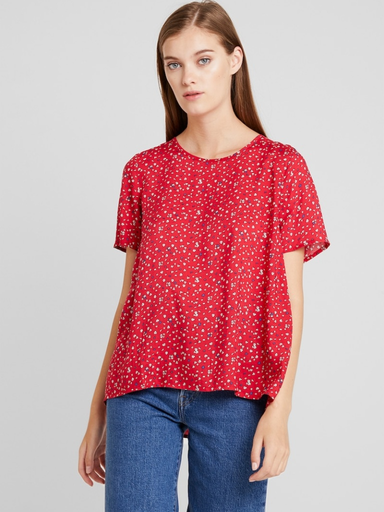
Real worn image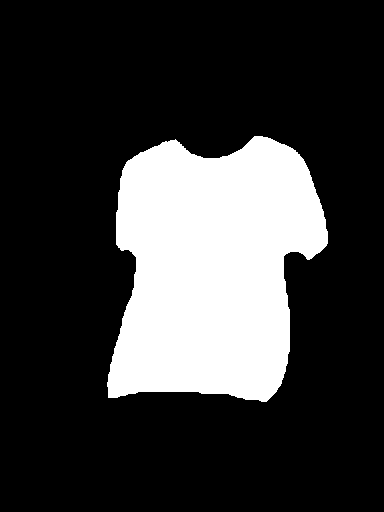
Old garment mask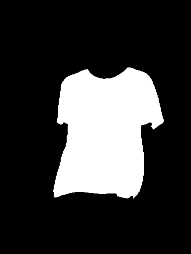
Corrected garment identity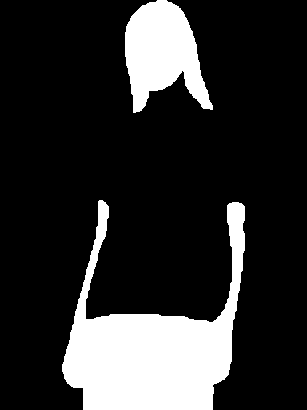
Protected body / other garments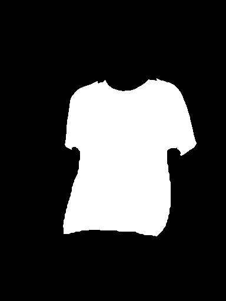
New inpainting maskProtected pixels erased by inpainting: old 6,730; new 0.
Source detail (automatic annotation)Raw single-pass predictionGenerator attention — orangeMeasured output change — red Frozen model: old versus corrected mask at timestep 499
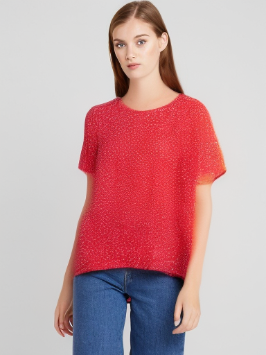
Old mask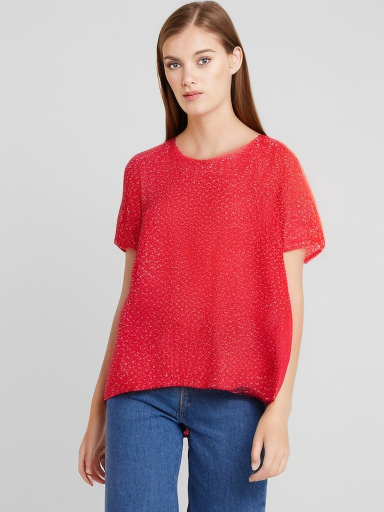
Corrected mask · same checkpoint and noisetest_05329_00 · regression
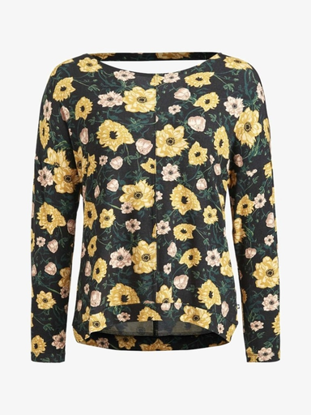
Flatlay reference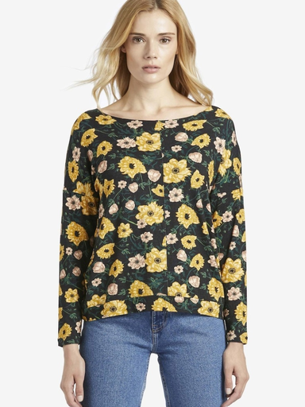
Real worn image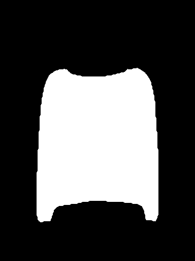
Old garment mask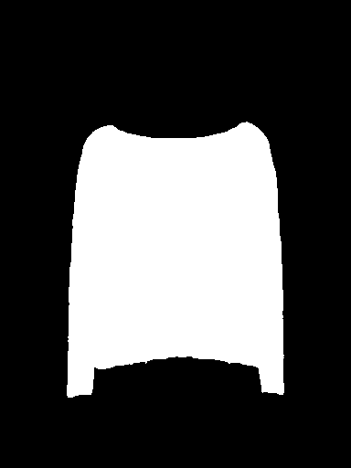
Corrected garment identityProtected body / other garments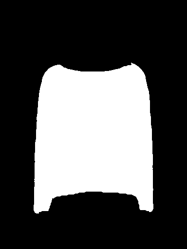
New inpainting maskProtected pixels erased by inpainting: old 5,624; new 0.
Source detail (automatic annotation)Raw single-pass predictionGenerator attention — orangeMeasured output change — red Frozen model: old versus corrected mask at timestep 499
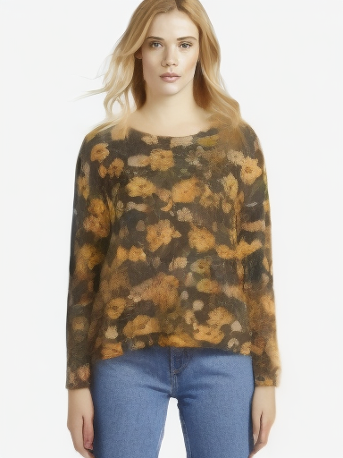
Old mask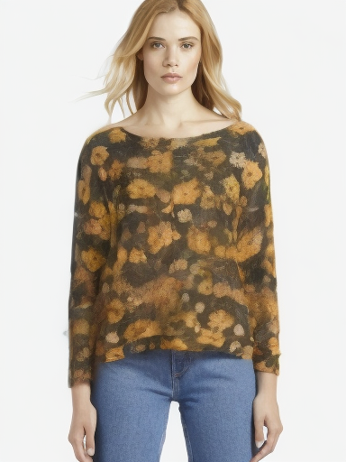
Corrected mask · same checkpoint and noisetest_05386_00 · regression
 Flatlay reference
Flatlay reference Real worn image
Real worn image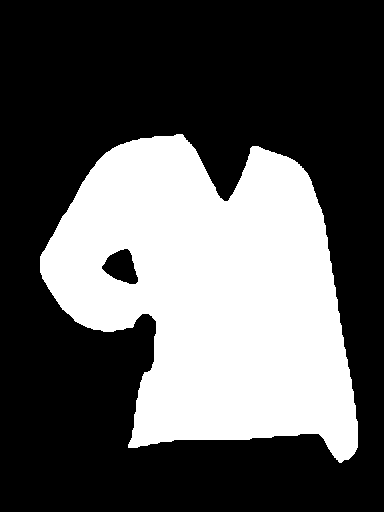
Old garment maskCorrected garment identity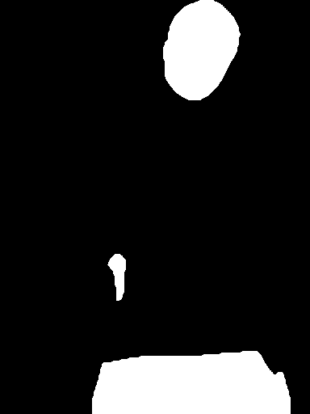
Protected body / other garmentsNew inpainting maskProtected pixels erased by inpainting: old 9; new 0.
Source detail (automatic annotation)Raw single-pass predictionGenerator attention — orangeMeasured output change — red Frozen model: old versus corrected mask at timestep 499
Old maskCorrected mask · same checkpoint and noise
test_12333_00 · heldout
Flatlay referenceReal worn imageOld garment maskCorrected garment identityProtected body / other garmentsNew inpainting mask
Protected pixels erased by inpainting: old 7,246; new 0.
Source detail (automatic annotation)Raw single-pass predictionGenerator attention — orangeMeasured output change — red test_01963_00 · heldout
Flatlay referenceReal worn imageOld garment maskCorrected garment identityProtected body / other garmentsNew inpainting mask
Protected pixels erased by inpainting: old 4,099; new 0.
Source detail (automatic annotation)Raw single-pass predictionGenerator attention — orangeMeasured output change — red test_06429_00 · heldout
Flatlay referenceReal worn imageOld garment maskCorrected garment identityProtected body / other garmentsNew inpainting mask
Protected pixels erased by inpainting: old 15,298; new 0.
Source detail (automatic annotation)Raw single-pass predictionGenerator attention — orangeMeasured output change — red test_09422_00 · heldout
Flatlay referenceReal worn imageOld garment maskCorrected garment identityProtected body / other garmentsNew inpainting mask
Protected pixels erased by inpainting: old 8,368; new 0.
Source detail (automatic annotation)Raw single-pass predictionGenerator attention — orangeMeasured output change — red test_12749_00 · heldout
Flatlay referenceReal worn imageOld garment maskCorrected garment identityProtected body / other garmentsNew inpainting mask
Protected pixels erased by inpainting: old 8,822; new 0.
Source detail (automatic annotation)Raw single-pass predictionGenerator attention — orangeMeasured output change — red test_06939_00 · heldout
Flatlay referenceReal worn imageOld garment maskCorrected garment identityProtected body / other garmentsNew inpainting mask
Protected pixels erased by inpainting: old 10,814; new 0.
Source detail (automatic annotation)Raw single-pass predictionGenerator attention — orangeMeasured output change — red test_12630_00 · heldout
Flatlay referenceReal worn imageOld garment maskCorrected garment identityProtected body / other garmentsNew inpainting mask
Protected pixels erased by inpainting: old 14,176; new 0.
Source detail (automatic annotation)Raw single-pass predictionGenerator attention — orangeMeasured output change — red test_00345_00 · heldout
Flatlay referenceReal worn imageOld garment maskCorrected garment identityProtected body / other garmentsNew inpainting mask
Protected pixels erased by inpainting: old 6,909; new 0.
Source detail (automatic annotation)Raw single-pass predictionGenerator attention — orangeMeasured output change — red train_12904_00 · calibration
Flatlay referenceReal worn imageOld garment maskCorrected garment identityProtected body / other garmentsNew inpainting mask
Protected pixels erased by inpainting: old 5,160; new 0.
Source detail (automatic annotation)Raw single-pass predictionGenerator attention — orangeMeasured output change — red train_02416_00 · calibration
Flatlay referenceReal worn imageOld garment maskCorrected garment identityProtected body / other garmentsNew inpainting mask
Protected pixels erased by inpainting: old 3,924; new 0.
Source detail (automatic annotation)Raw single-pass predictionGenerator attention — orangeMeasured output change — red train_05819_00 · calibration
Flatlay referenceReal worn imageOld garment maskCorrected garment identityProtected body / other garmentsNew inpainting mask
Protected pixels erased by inpainting: old 15,252; new 0.
Source detail (automatic annotation)Raw single-pass predictionGenerator attention — orangeMeasured output change — red train_09362_00 · calibration
Flatlay referenceReal worn imageOld garment maskCorrected garment identityProtected body / other garmentsNew inpainting mask
Protected pixels erased by inpainting: old 651; new 0.
Source detail (automatic annotation)Raw single-pass predictionGenerator attention — orangeMeasured output change — red